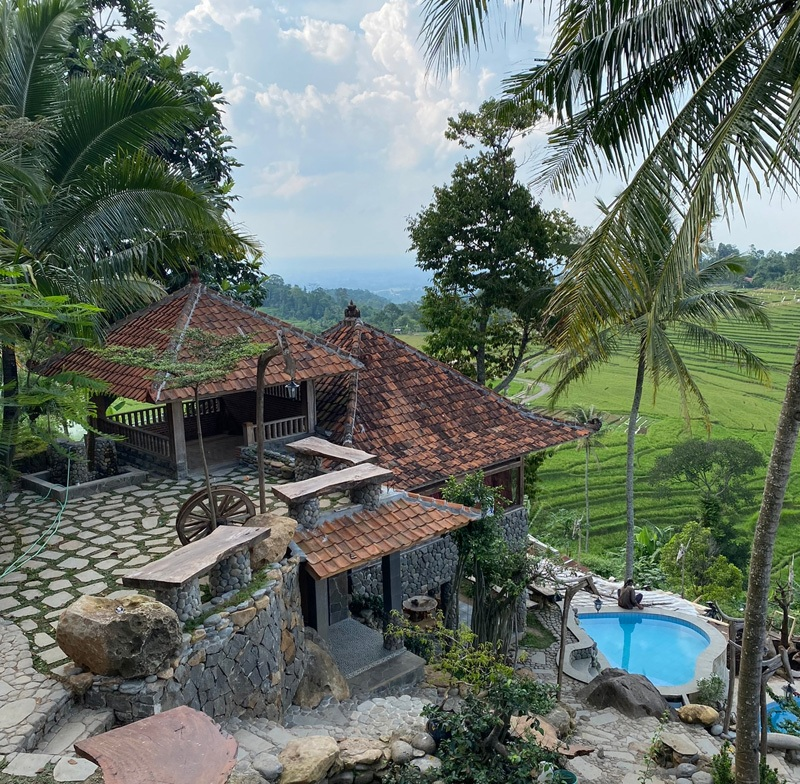
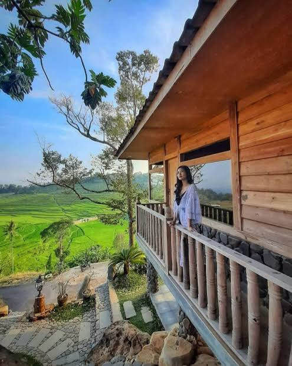

🌿 Tentang Ciboer Pass
Ciboer Pass adalah destinasi wisata alam yang menyuguhkan pemandangan terasering sawah yang mirip dengan Ubud, Bali. Terletak di Desa Bantaragung, Majalengka, tempat ini menawarkan udara sejuk dan spot foto yang memanjakan mata.
📸 Obyek Wisata
Nikmati berbagai aktivitas menarik seperti jalur trekking sawah, bermain di sungai jernih, dan berburu foto estetik di sepanjang terasering.
🎟️ Daftar Paket Wisata

Paket Staycation Villa
📅 Tersedia: Setiap Hari
Fasilitas villa dengan view langsung ke sawah dan sarapan gratis.
Rp500.000 / Malam

Paket Camping Ceria
📅 Tersedia: Sabtu - Minggu
Termasuk tenda, api unggun, dan tiket masuk area camping.
Rp150.000 / Orang
📞 Pemesanan
Hubungi WhatsApp resmi kami untuk reservasi dan informasi lebih lanjut:
WA: 0896-7362-1516